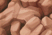
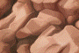
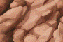
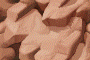
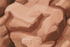
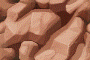
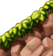
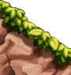

| 属性 | 内容 |
|---|
| info.0 | |
| info.0.origin | 45,18 |
| info.0.z | 0 |
| bsc.0 |  |
| bsc.0.origin | 0,0 |
| bsc.0.z | 0 |
| bsc.1 |  |
| bsc.1.origin | 0,0 |
| bsc.1.z | 0 |
| bsc.2 |  |
| bsc.2.origin | 0,0 |
| bsc.2.z | 0 |
| bsc.3 |  |
| bsc.3.origin | 0,0 |
| bsc.3.z | 0 |
| bsc.4 |  |
| bsc.4.origin | 0,0 |
| bsc.4.z | 0 |
| bsc.5 |  |
| bsc.5.origin | 0,0 |
| bsc.5.z | 0 |
| enH0.0 | |
| enH0.0.origin | 0,36 |
| enH0.0.z | -3 |
| enH0.0.foothold.0 | 0,-28 |
| enH0.0.foothold.1 | 90,-28 |
| enH0.1 | |
| enH0.1.origin | 0,37 |
| enH0.1.z | -3 |
| enH0.1.foothold.0 | 0,-28 |
| enH0.1.foothold.1 | 90,-28 |
| enH0.2 | |
| enH0.2.origin | 0,37 |
| enH0.2.z | -3 |
| enH0.2.foothold.0 | 0,-28 |
| enH0.2.foothold.1 | 90,-28 |
| enH1.0 | |
| enH1.0.origin | 0,0 |
| enH1.0.z | -3 |
| enH1.1 | |
| enH1.1.origin | 0,0 |
| enH1.1.z | -3 |
| enH1.2 | |
| enH1.2.origin | 0,0 |
| enH1.2.z | -3 |
| enV0.0 | |
| enV0.0.origin | 29,0 |
| enV0.0.z | -2 |
| enV0.0.foothold.0 | -40,60 |
| enV0.0.foothold.1 | -40,0 |
| enV0.1 | |
| enV0.1.origin | 29,0 |
| enV0.1.z | -2 |
| enV0.1.foothold.0 | -40,60 |
| enV0.1.foothold.1 | -40,0 |
| enV1.0 | |
| enV1.0.origin | 0,0 |
| enV1.0.z | -2 |
| enV1.0.foothold.0 | 40,0 |
| enV1.0.foothold.1 | 40,60 |
| enV1.1 | |
| enV1.1.origin | 0,0 |
| enV1.1.z | -2 |
| enV1.1.foothold.0 | 40,0 |
| enV1.1.foothold.1 | 40,60 |
| edU.0 | |
| edU.0.origin | 32,37 |
| edU.0.z | -4 |
| edU.0.foothold.0 | -40,0 |
| edU.0.foothold.1 | -40,-28 |
| edU.0.foothold.2 | 40,-28 |
| edU.0.foothold.3 | 40,0 |
| edU.1 | |
| edU.1.origin | 30,36 |
| edU.1.z | -4 |
| edU.1.foothold.0 | -40,0 |
| edU.1.foothold.1 | -40,-28 |
| edU.1.foothold.2 | 40,-28 |
| edU.1.foothold.3 | 40,0 |
| edD.0 | |
| edD.0.origin | 23,0 |
| edD.0.z | -4 |
| edD.1 | |
| edD.1.origin | 20,0 |
| edD.1.z | -4 |
| slLU.0 |  |
| slLU.0.origin | 90,95 |
| slLU.0.z | -3 |
| slLU.0.foothold.0 | -90,-28 |
| slLU.0.foothold.1 | 0,-88 |
| slRU.0 |  |
| slRU.0.origin | 0,95 |
| slRU.0.z | -3 |
| slRU.0.foothold.0 | 0,-88 |
| slRU.0.foothold.1 | 90,-28 |
| slLD.0 | |
| slLD.0.origin | 90,0 |
| slLD.0.z | -3 |
| slRD.0 | |
| slRD.0.origin | 0,0 |
| slRD.0.z | -3 |